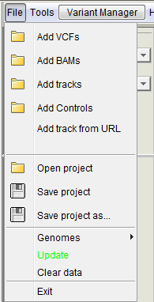
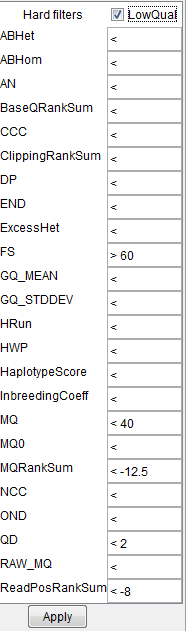

BasePlayer manual
Main window

The main window of BasePlayer displaying three samples, a genomic region track and a population control data track. Variant view of chromosome 10. (a) Toolbar contains tools for managing the data and navigating the genome. (b) Genome bar visualizes chromosome bands and genes. Reference sequence and gene annotation can be changed from dropdown menus at left. Memory usage shows used and allocated memory for BasePlayer. (c) Region tracks are used to exclude and annotate variants. In addition, various types of regional or base specific scores can be visualized as histograms and TF binding motifs as sequence logos. Pressing the red play button will apply the track - this will exclude any variants outside the region. (d) Control tracks can be used to exclude common polymorphisms by setting the allele frequency threshold. (e) Sample tracks visualize VCF and BAM files of the sample overlayed. Sample name and statistics for currently visible variants shown on the left. Vertical lines represent variant calls in a sample, colored as red, green (SNV or indel in coding region, respectively) and grey (variant in non-coding region). Height is relative to the sequencing coverage at the variant locus.
Toolbar

- File open, additional tool, variant manager and help menus
- Change chromosome
- Go to previous location (back/forward buttons)
- Search bar. Search by position (e.g. 4:5306600) or search by gene name or ENSG code
- Zoom back to chromosomal level
- Current view region (start and end position of the screen)
- Current view length
File menu
|  |

|
- Open/save project
Open and save BasePlayer projects (.ses).
- Genomes
Change and add new genomes (opens the Genome selector)
- Update
Update BasePlayer. The button is visible only when updates are available. It is also possible to update BasePlayer manually by downloading BasePlayer.jar from https://baseplayer.fi/update.
- Clear data
Clears all opened samples, tracks and controls.
- Exit
Closes BasePlayer.
Tools
Table browser
Table Browser is a tool for fast browsing through the genome. It is particularly useful when validating break points of the structural variants or the quality of variant calls. You can open any tab separated file (gzipped or raw text file) with the chromosomal position information. Double clicking the position will take user to the selected locus and visualize the data.
{kind=link}
On above example, BasePlayer output is opened for visual validation of candidate variants. User can select from the user interface (dropdown menus at the table header), which column corresponds to which information Options for header values are:
- Position Use this selector, when there is chromosome and position on the same column (e.g. BasePlayer output above; 3:24,446,246)
- Chromosome When chromosome is on its own column, use this selector.
- Start If the file has a separate column for chromosome and position(s) use this selector for start position (Figure below).
- End If the file has a separate column for chromosome and regional (start/end) positions use this selector for end position (Figure below).
- Sample If the file contains positions for multiple samples select this header value for the column containing sample names. BasePlayer will expand the selected sample when the position is double clicked (Figure above).
- Gene If the file contains gene names, double clicking the "Gene" column will zoom in to the selected gene (Figure above).
- Editable This column value marks the column as "Editable", which allows user to edit the table values. The last column is automatically set as Editable, where user can write the validation status of the variant, for example.
{kind=link}
See demonstration video of the usage of "Table Browser" at:
Coverage calculator
Use this tool to get coverage information from the opened BAM files. First, open BAM files as sample tracks "File -> Add BAMs". Open "Coverage Calculator" and open BED file containing e.g. targeted regions which will be used in coverage calculation. If you have only a few regions in the BED file, check the "Small region" checkbox for faster processing. Press "Execute" to start the calculation.
 Column explanations:
Column explanations:
- Sample Sample name
- Average coverage Average coverage of the BAM file in opened BED file regions
- Average mapping quality Average mapping quality of the reads in the BAM file
- Soft clip rate Proportion of the reads having soft clips (https://www.biostars.org/p/119537/)
- Zero quality rate Proportion of reads having a mapping quality of zero
- Covered (%) (Coverage : Percentage) Indicates the proportion of covered regions out of all regions at different coverage levels. I.e. "5 : 63" means that if the opened region BED file have total length of 100,000bp, 63% of the total region (63,000bp) have been covered at least with 5 reads. The last value e.g. "10+ : 48%" means that 48% of the regions have been covered with at least ten overlapping reads.
- Status Shows the progress of the coverage calculation
Variant caller
This is the test version of a simple variant caller, which you can use for BAM files in case you do not have VCF files available.

- Min. alt-read count Minimum read count for the alternative base calling reads / how many reads are required for the variant call
- Min. coverage Minimum total coverage of the locus to be used in variant calling
- Min. mapping quality Minimum mapping quality of the reads, which are used in variant calling
- Min. base quality Minimum base quality of the mismatched base in the read to be used in the calling
- Require both strands Base is called only if both forward and reverse strand reads call the same variant
- Require multiple runs In case the used BAM file contains reads from different runs, require that the variant is present in all runs (possibly eliminates run specific errors)
- Calc only for selected Calculate variants only for the selected sample (click sidebar of the sample track to select a sample)
- Before annotation Start the variant calling after the "Annotation" is pressed in the "Variant Manager"
BED converter
BED converter is a tool, which allows user to import external annotation data, which is not in standard format (BED, BigWig, GFF etc.), to BasePlayer.
It converts any tab separated file (containing at least chromosome, start and end position fields) to a sorted, compressed and indexed BED file. The file is then usable as an annotation, filtering
and visualization track. See demonstration video of the BED converter usage with UCSC data in link below.
Open tab separated text file (gzipped or plain text) in BED converter. Several rows of the file appears on the table. Select correct header description for the columns using the dropdown menus on the header (red circle). Some columns may have been selected automatically. You must select at least "Chromosome", "Start" and "End" columns for BED conversion. Optional fields are "Name", "Score" and "Strand". Only selected files are added to processed BED file.

Genome bar
The genome bar visualizes the opened reference sequence, cytobands (at least for humans and mice) and genes. At the whole chromosome level zoom, genes which have a screen length more than 1 pixel are named and aligned on different (y-coordinate) levels. I.e. the more you zoom, the more genes are visible.

Left Sidebar contains label for the selected chromosome, dropdown menus for selecting the reference genome / gene annotation, and current memory usage out of the total memory allocated for BasePlayer. You can use the dropdown menus to add new annotations and reference sequences as well.
The current location of the screen is visualized on top of the cytoband with the red border. You can jump easily to the desired region by dragging mouse on top of the cytoband. Centromere is indicated as red triangles.
{kind=link}
On the figure above, the last exon of the gene APC is shown. Reference sequence and aminoacids are visible at this zoom level. In addition,
variants of the all opened samples are collapsed into this view (red and green bars) showing also the amino acid change or the indel effects in place.
Tip: drag mouse on top of the reference genome to copy the sequence to clipboard. You can then paste (ctrl-v) the sequence to external software.
Tip2: right click the genome bar screen to copy the position to clipboard.

On the figure above, the DCP2 gene and its isoforms are shown. Right click any exon of the gene to expand the isoforms (if available). By default, longest transcript is shown. Click the exon for more information of the gene and exon. click ENSG or ENST code to open Ensembl page for the gene or specific transcript. Click "View in GeneCards" to see the webpage for selected gene.
Region/annotation tracks
The region track visualizes opened region files (BED, BigWig etc.). The track is also used to annotate or filter opened variants. Open region files in "File -> Add tracks". The "Play" button appears to the left sidebar when there are opened VCFs on the sample tracks. If region file containts values, the "Histogram" button appears on the sidebar. The region height is determined by its value, when the Histogram view is selected. In case of negative and positive values, region track is splitted vertically, zero value in the middle, negative values as red. The scale of the view is shown at the bottom left corner of the track.

If the region track file is larger than set in the Settings" -> "General" -> "Big file size for tracks (MB)", the track is visualized, when zoomed in closer than set in "Settings" -> "General" -> "Processing window size (bp)".
Right click the track or left click the cogwheel symbol to open the track settings:
- Intersect If "Play button" is pressed i.e. track is applied and intersect is selected, variants outside the regions are excluded / hidden. If not checked, no variants are excluded, but are still annotated for the overlapping occurrences.
- Subtract If track is applied and subtract is selected, variants inside the regions are excluded / hidden.
- Zero based If start and end positions in the file are not reported starting from zero, uncheck this checkbox and the positions will be shifted accordingly.
- Log scale Change the histrogram view to log scale
- Auto scale (in histogram view) Scale the peak heights by the highest/lowest value on the screen
- Auto collapse (in region view) Collapse and expand track regions as zoomed in/out
- Report affinity changes If the track file has a name-field recognized as a transcription factor, affinity changes will be reported on the results if this checkbox is selected
- Apply in annotation In case the track file is big ("Settings -> General"), it is annotated using the window size set in the settings and may take a while to complete. Use this checkbox to apply the track automatically after the "Variant Manager" -> "Annotation" is pressed.
- Value limit Use only regions of the track file, which have higher than the set value
- Left vertical slider When not in histogram view, use the slider to set the region bar height

If the track file is recognized to include transcription factor binding sites by the "Name" column, binding motifs are visualized at the sequence level zoom.
Control tracks
The control track allows user to apply and set options for control files. Open VCFs for this track in "File -> Add controls". The track will appear above the sample tracks. Set the allele frequency limit for the control file. When track is applied, variants having allele frequency more than the limit will be excluded / hidden. Set the limit value to "1" for only annotation of variants. Right click the control track to select specialized controlling for indels "Overlap indels". Indels are excluded if the control file have overlapping indel at that locus. Otherwise exact match is required for the indel to be filtered out.

Open control file as a sample for the visualization of the file. In upcoming versions, variants will be visualized in the control track when zoomed in.
Sample tracks
Sample tracks visualize VCF and BAM files. If you have BAM file named after the VCF file and those are placed in the same folder, both files will be visualized on the same track.
The left sidebar shows information about the visible variants on the screen:
- Sample name Sample name is the name of the VCF or BAM file by default. You can change it in the sample data dialog (see below)
- Variants The number of visible variants (SNVs + indels) on the screen and indel count in parentheses
- Number of heterozygotes
- Number of homozygotes
- Transition / Transversion rate
- Filetypes on the track If both VCF and BAM/CRAM is colored green, both files are visualized on the track
- Var height by... Variant height on the screen indicates the coverage (by default) at the variant locus. You can change the height determinant from the "Settings -> Variants" The maximum height value of visible variants is shown in parentheses.

Every vertical line on the sample track represents a line of the VCF file (variant call). Red and green lines indicate coding SNVs and indels, respectively. Intronic variants are light gray and intergenic dark gray.
Variants are visible, if they pass all the filters set in the "Variant Manager" and have not been filtered out by applied control or region tracks.
On the above screenshot, the bottom track visualizes ClinVar data and is used as an annotation (yellow indicator on the sidebar).

If you zoom in to the sequence level (image above), the reads are visualized from the corresponding BAM file. At the top of each track is the coverage track, which shows position specific coverage and possible mismathes read from the read data. The variant call from VCF is shown behind the reads (red line in the image).

To get more information about the individual reads or variants, you can click them at the sequence level zoom (above image).
Click the variant to view the VCF information popup, which shows the VCF line information as is.
Click the read one time to view the BAM information popup:
- Read name
- Chromosomal position and strand (in parentheses)
- Mapping quality (phred scale; 60 is typically maximum value)
- Insert size Insert (or fragment) size is inferred from the paired end reads. It is the distance between the start position of the first read and the end position of the second read. The number is negative for the second read pair.
- Cigar string contains information about the indels and clipped parts of the read
- Read length
- Chromosomal position of the mate (or pair) and its orientation
- Indicator, whether the read is primary alignment.
Right click the sidebar, or click the sample name on the sidebar to open "Sample data" dialog (image below):
 |
|
Genome selector
Genome selector appears on the first start of the BasePlayer. This tool allows you to add new reference genomes and gene annotations. Revisit this window by clicking File -> Genomes -> Add new genome.... or by selecting "Add new reference..." from the reference dropdown menu on the left sidebar of the Genome bar.

1. Fetch new reference genomes and gene annotations from Ensembl if available.
2. Select Ensembl genome.
3. Download selected Ensembl reference genome and gene annotation. Files will be automatically installed to your genome directory (9.).
4. Get download links for the reference genome and gene annotation files. If you can not connect to the Ensembl via BasePlayer, download the files using web browser and add the genome manually using the "Add new reference..." in this window (6.) and "Add new annotation..." (5.)
5. Add new annotation file (GFF3 or GTF) to the reference genome.
6. Add new reference genome (FASTA).
7. Remove selected genome or annotation.
8. Check, whether selected Ensembl genome has newer gene annotation version available.
9. Your genome directory, where genomes will be installed.
See instruction video, how to add genomes to BasePlayer:
Variant Manager

Variant Manager user interface and functions.
- Panels for variant quality filtering, variant hiding and sample-wise comparison
- SNV and Indel quality filters. Separate filters for indels can be activated in the "Indels" tab - same filtering is used by default for SNVs and indels
- Min. quality score: filter variants by the "QUAL" field of the VCF file
- Min. genotype quality score: filter variants by the GQ field of the VCF file
- Min. coverage: filter variants by the total coverage at the variant position
- Max. coverage: filter variants if coverage exceeds this value
- Min/max allelic fraction: filter variants by the allelic fraction. Green handle for the minimum and red handle for the maximum value. e.g. remove homozygous variants by setting the max value to less than 100%.
- Variant annotation panel including gene effect and output writing options
- Panels for annotation results for genes, clusters, statistics and annotation tracks
- Result table shows a list of genes and variants which pass the filters and options set in the Variant Manager as well as any activated track.
Color red, yellow, green and gray indicates nonsense, missense, synonymous and non-coding variants, respectively.
Click the gene row to expand the variant view. In case multiple samples share the variant, "Multiple" is shown in the Sample column. Click the multiple row to expand the samples.
If controls are applied, there is column for the allele frequency in the control data, including odds ratio with the p-value (fisher exact, right tailed). Also applied annotation tracks are shown in separate columns.
{kind=link}
Indel tab is identical to the SNV filtering panel with the exception of the "Use indel specific filters" checkbox. Select the checkbox to activate the indel specific filters.
{kind=link}
Hide panel contains checkboxes to hide / filter out variants with the provided characteristics. If you have set the filters for your project and do not need to adjust them, you can check the "Freeze filters" checkbox for faster loading times and lesser memory consumption. Variants, which do not pass the variant filters, will not be read from the VCF file and not loaded to memory.
{kind=link}
Use this panel to compare variants or mutated genes in multiple samples.
The upper slider sets the minimum number of cases which
must harbor a variant in the same gene for these variants to be shown. It can thus be used if the sample set consists of cases with a
common disease, which might not share the same specific variant even though the same gene is mutated (e.g., sporadic cases or somatic
mutations in cancer). Lower slider compares individual variants. For instance, the value 2/3 means that only variants shared by two or
three (all) samples are included and visible on the screen. "Window size for variant cluster" sets variant clustering behavior.
{kind=link}
Inheritance pattern selectors.
If you have set affected samples from the "Sample data" dialog, you can use inheritance patters when annotating variants.
|
Gene annotation options. These settings affect to the variant annotation with genes.
|
|
|  |
If variants have been called e.g. with GATK HaplotypeCaller, click the "Min. quality score" text on the Variant Manager
to see the "Hard filters" popup. The suggested parameters can be found at
https://gatkforums.broadinstitute.org/gatk/discussion/2806/howto-apply-hard-filters-to-a-call-set
Note: FS parameter has "greater than" symbol set before the value. |
|
Set output file format. |
{kind=link}
Variant statistics table.
Includes statistics for all visible variants after annotation.
Settings
Open BasePlayer settings in "Tools -> Settings" or use the cogwheel symbol at the rightmost of the Toolbar
General

- Coverage draw distance (bp) Set the distance, how far the BAM file is visualized as a coverage histogram. Set it for example to 1 billion to view coverages at the chromosomal level (high-coverage whole-genome data will be slow with this setting)
- Processing window size (bp) When handling a massive dataset without enough available memory, you can calculate and annotate variants in smaller batches (see "Variant Manager"). This value determines the window size for the batch. Also, if track file bigger than set in below field is opened, it will be visible at this distance.
- Set the file size for big track files to prevent the visualization of the data at the chromosomal level. If handling e.g. 80GB file it is not feasible to open and visualize the track data as a whole
Variants

Select the characteristic of the variant, which will determine its height on the screen (default: coverage).
Coverage: total coverage in variant position
Allelic Fraction: a fraction of reads calling the alternative base out of total coverage (values between 0 and 1)
Quality: value based on the QUAL field of the VCF
GQ: Genotype quality: value based on the GQ value of VCF file (not necessarily set)
Calls: a nuber of reads calling the variant
Reads

Select options for read visualization.
Maximum insert size: the insert size greater than the set value is considered as a deletion and the read is colored green
Mapping quality: the read with mapping quality below the set value is colored black
Base quality: mismatched bases on the read, which have base quality below the set value have dimmer color
Read depth limit: reads are drawn only at the height of the set value
Show bases in sofclips: BAM file may not have mismatch information for the soft clipped parts of the read. Select this checkbox to show them anyway
Appearance

Change the appearance of BasePlayer.
Font size: set the preferred font size and weight used in the software
Background color: set the background lightness of the region, control and sample tracks
Sidebar color: set the sidebar colors using RGB values
Proxy
Set up your proxy settings. Check "Use proxy", select the protocol, host address and port. Finally press "Save".
See instruction video at